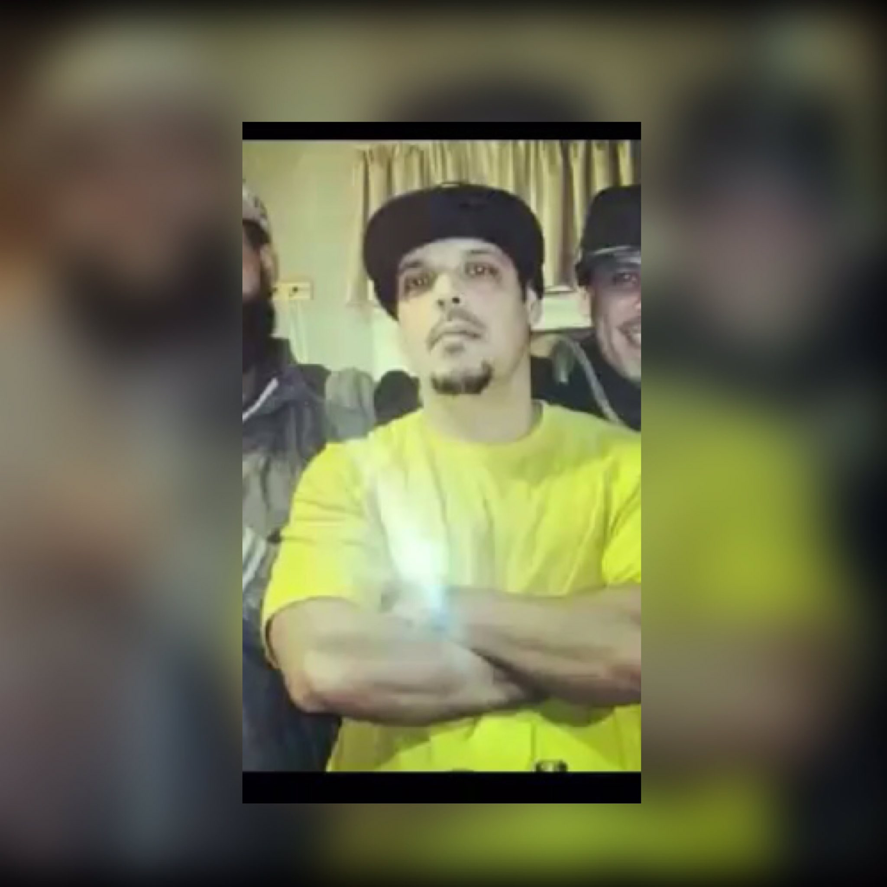

First, I'd like to say I've never in a million years thought I would be in this major. As of right now due to my struggles, I still question it. Suprisingly, I love it. Although I want to throw my computer out the window
majority of the time,
whenever I'm done a project it is a great feeling. I love solving a problem and I enjoy challeneges. I want to do so much with this major. Wish me luck!

Growing up I was very lucky. I had both parents in my household. Unfornuately, when I was 16 years old; in my junior year of highschool, my father passed away. My life and my family fell apart. Losing the rock of my family
was the hardest
thing that I've went through. I dropped out of school and did absolutely nothing. As time went by, I realized I had to live for him. I got back into school and now I'm here...at Thaddues Stevens College of Technology. I am very proud to say my
first
year of college I finished with a 4.0 GPA. My dad is my motivation.